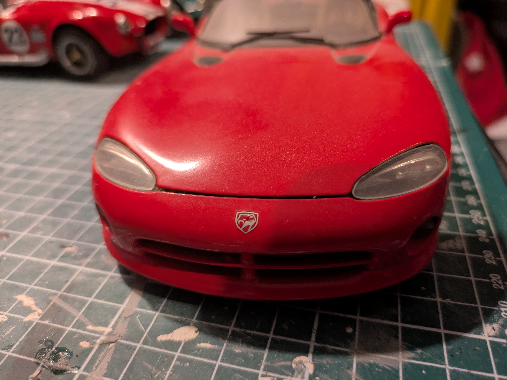

Comparaison avant / après restauration.


Évolution du modèle vu du dessus.


Travaux de carrosserie et détails latéraux.


Comparaison arrière avant / après restauration.


Détails de l'habitacle en cours de réalisation.